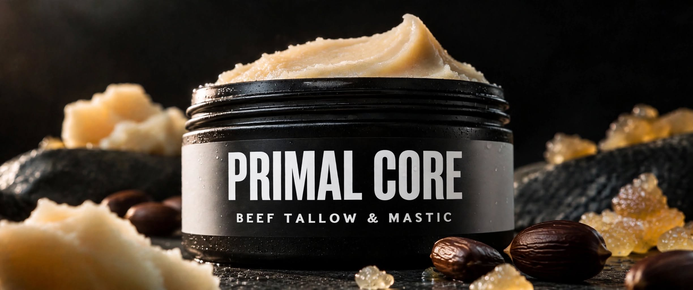

Η περιποίηση δεν με απασχολούσε ιδιαίτερα.
Μέχρι που άρχισα να παρατηρώ τις πρώτες αλλαγές στο πρόσωπό μου. Τις λεπτές γραμμές, τα σημάδια του χρόνου.
Όπως οι περισσότεροι, αγόραζα κρέμες από το σούπερ μάρκετ χωρίς να δίνω ιδιαίτερη σημασία στα συστατικά τους. Κάποιες φορές ένιωθα το πρόσωπό μου περισσότερο αφυδατωμένο ακόμα και μετά την εφαρμογή τους.

Άρχισα λοιπόν να ψάχνω.
Ήθελα να καταλάβω τι πραγματικά χρειάζεται η επιδερμίδα, ποιος είναι ο ρόλος των συστατικών και πώς οι άνθρωποι φρόντιζαν το δέρμα τους πριν από τη σύγχρονη βιομηχανία καλλυντικών.

Μέσα από αυτή την αναζήτηση γνώρισα το beef tallow, ένα παραδοσιακό συστατικό περιποίησης που χρησιμοποιείται εδώ και γενιές.
Η απλότητά του μου κέρδισε την περιέργεια.

Ακολούθησε σχεδόν ένας χρόνος προσωπικής έρευνας, δοκιμών και αναζήτησης συστατικών. Η δική μου εμπειρία με έκανε να πιστέψω ότι άξιζε να εξερευνήσω αυτή την κατεύθυνση περισσότερο.
Κάπου εκεί γεννήθηκε η ιδέα του PRIMAL CORE.

Ενός balm με βάση το beef tallow και τη μαστίχα Χίου, εμπνευσμένου από την Ελληνική προγονεϊκή περιποίηση και σχεδιασμένου γύρω από μία απλή αρχή:
Να γνωρίζεις τι βάζεις στο δέρμα σου. Και γιατί.
Το προϊόν βρίσκεται υπό ανάπτυξη. Η σύνθεση, η καταλληλότητα και οι ισχυρισμοί του θα οριστικοποιηθούν μετά τους απαραίτητους ελέγχους. Δεν διατίθεται ακόμη προς πώληση.
Θέλω να μπώ